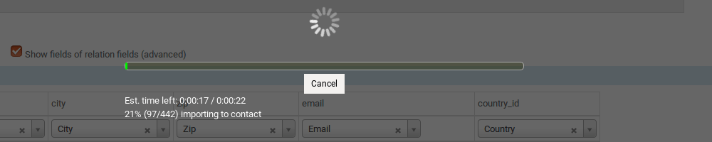
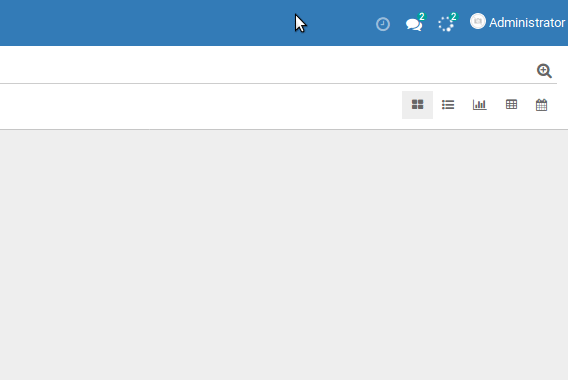

Dynamic Progress Bar
Progress bar for Odoo waiting screen, possibility to cancel an ongoing operation and a system tray menu for all
operations in progress.


web_progress is compatible with Odoo 11.0, 12.0, 13.0, 14.0, 15.0, 16.0, 17.0, 18.0 (CE and EE).
Author: Grzegorz Marczyński
License: LGPL-3.
Copyright © 2025 Grzegorz Marczyński
What's New in Version 3.0
- Complete OWL components rewrite for Odoo 17 modern architecture
- Enhanced UI blocking with "Put to background" functionality
Key Features
- Comprehensive Progress Tracking - Built-in progress reporting for all standard Odoo import/export operations
- System Tray Management - Convenient menu showing all ongoing operations with real-time status updates
- Background Operations - Move long-running tasks to background while keeping UI responsive
- UI Blocking Protection - Optional UI blocking with easy background transition (inactive by default in Odoo 17)
- Real-time Updates - Live progress updates via longpolling with automatic fallback
- Operation Cancellation - Cancel long-running operations safely with proper exception handling
- Multiple Styles - Choose from standard, simple, or fun nyan cat progress bars
- Nested Operations - Support for multi-level progress tracking with sub-operations
- Cron Job Support - Works with scheduled tasks and background jobs
- Generator Support - Efficient handling of large datasets and generators
For Developers
Adding progress tracking to your operations is incredibly simple:
# Before: Standard loop
def action_operation(self):
for rec in self:
rec.do_something()
# After: Progress-enabled loop
def action_operation(self):
for rec in self.with_progress(msg="Processing records"):
rec.do_something()
Advanced Usage
# For generators (when len() cannot be called)
for item in self.web_progress_iter(data_generator, total=10000):
process_item(item)
# With proper cancellation handling
try:
for rec in self.with_progress(msg="Critical operation"):
rec.perform_task()
except UserError as e:
if "cancelled" in str(e):
self.cleanup_after_cancel()
Parameters available: msg, total, cancellable, log_level
User Experience
- Intuitive Interface - Progress bars appear automatically for long-running operations
- Flexible Viewing - Switch between modal dialog and system tray views
- Smart Notifications - Clear status messages including "No ongoing operations" when idle
- Responsive Design - Works seamlessly on desktop and mobile interfaces
- Non-intrusive - Minimal performance impact on your operations
- Reliable - Automatic cleanup and error recovery
Technical Highlights
- Separate Transactions - Progress tracking doesn't interfere with your main operations
- Longpolling Integration - Real-time updates using Odoo's built-in messaging system
- Memory Efficient - Generator-based iteration with no memory overhead
- Thread Safe - Multiple operations can run simultaneously without conflicts
- Automatic Cleanup - Progress records are automatically removed after completion
Installation & Compatibility
Simply install the module and start using with_progress() or web_progress_iter() in your code. No additional configuration required!
Requirements: Longpolling should be operational for real-time updates (falls back to periodic polling if unavailable).